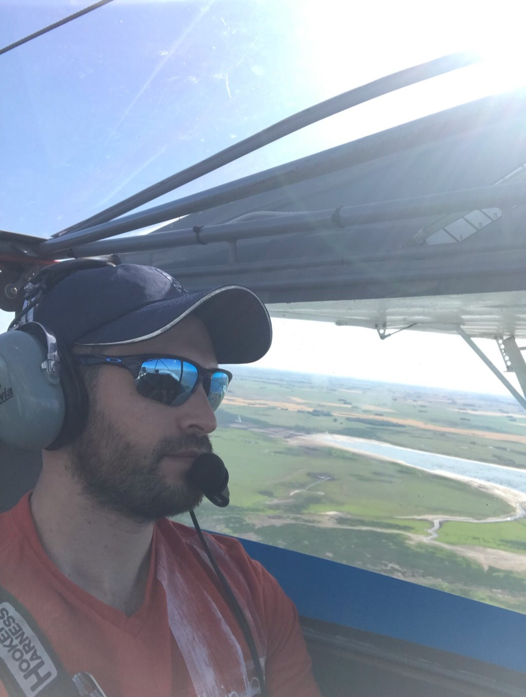

CURRICULUM VITAE DE JUAN RINALDI
Datos Personales
- Nombre completo: Ing. Rinaldi Juan
- Fecha de nacimiento: 21/01/1983
- Lugar de nacimiento: Córdoba, Argentina
Formación Académica
- 2001-2004
- Universidad Tecnológica Nacional
- Ing. Electrónica - 40% Finalizada
- 2005-2014
- Universidad Tecnológica Nacional
- Ing. Industrial - Finalizado
- 2017-2019
- Aeroclub Córdoba
- Piloto Privado de Avión
Experiencia laboral
- 2018 a la actualidad
- José M. Alladio e hijos S.A.
- Comprador Técnico Sr
- 2015 - 2018
- Disal S.A. (Tersuave)
- Analista de Planificación y Control de la Producción
- 2010 - 2015
- Sohipren S.A.
- Analista de Planificación y Control de la producción